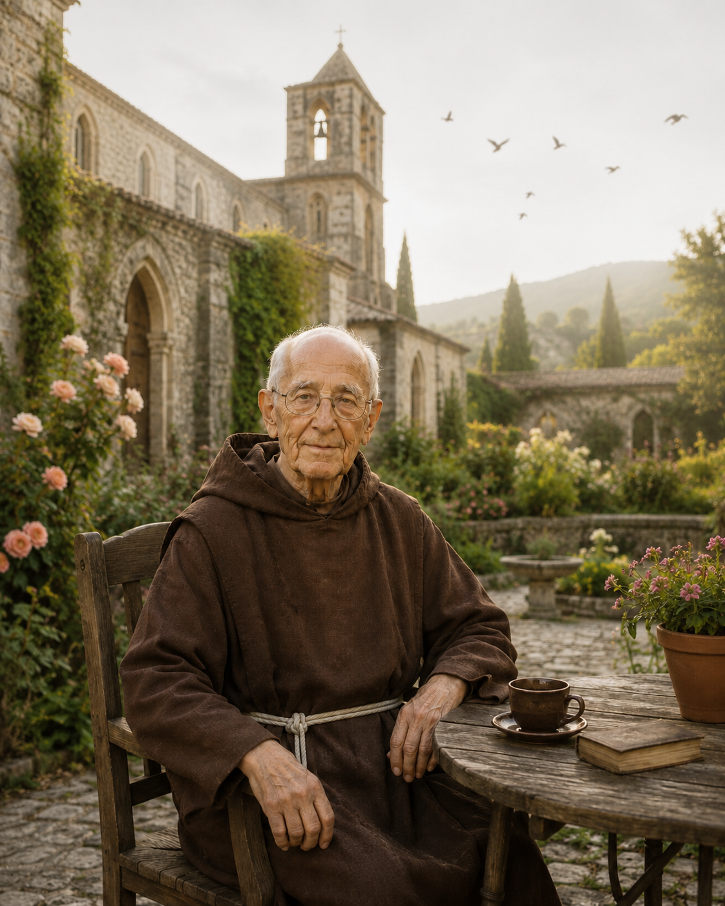

De continuar funcionando mesmo quando por dentro algo parece estar se quebrando. Você sorri por fora porque é preciso, mas por dentro sente um peso difícil de explicar.
Te prometo algo muito mais profundo: um espaço diário e seguro, entre você e Deus, para soltar o que você não foi feito para carregar sozinho.
Dez minutos por dia. Vinte e um dias. E no silêncio do seu coração, a verdadeira transformação espiritual começará a acontecer. Não através de fórmulas complexas, mas da proximidade de um caminho guiado passo a passo.
Deus não está em silêncio, você é que está com pressa. Durante os primeiros sete dias, você será guiado a silenciar os barulhos externos, reaprender a escutar e descobrir que muitas das respostas que você procura já foram dadas nos pequenos sinais do dia a dia.
A batalha mais dura da sua vida não está do lado de fora. Na segunda semana, você vai identificar e dar nome aos inimigos invisíveis que tentam roubar a sua paz: a voz da acusação, o cansaço profundo de alma, a comparação constante, o medo do amanhã e o orgulho autossuficiente.
Ouvir sem caminhar é desperdiçar a voz de Deus. Nos últimos sete dias da jornada, você aprenderá a colocar a escuta em movimento. Descubra o que você precisa deixar para trás, dê o passo que vem adiando há anos e compreenda que a sua própria dor superada pode servir como cura para outras pessoas.

O ebook principal da jornada: 21 reflexões diárias, 21 passagens bíblicas, 21 orações do despertar e 42 perguntas de escavação profunda para escrever e desarmar a sua alma.
Valor Individual: R$ 47,00BÔNUS EXCLUSIVO: Um ano inteiro de perguntas e orações diárias divididas em 12 temas mensais para sacudir o automático da alma no seu cotidiano.
Valor Individual: R$ 37,00BÔNUS EXCLUSIVO: Guia prático de orações, meditações e reflexões bíblicas focadas no alívio da ansiedade e restauração das feridas do passado.
Valor Individual: R$ 29,00BÔNUS EXCLUSIVO: Um documento digital personalizado de conclusão da sua jornada de 21 dias com Deus, para consolidar o seu compromisso.
Valor Individual: R$ 15,00Frei Miguel Lucero é um personagem inspirado na espiritualidade franciscana, criado para guiar almas cansadas que perderam o rumo no barulho do cotidiano. Ele não fala a partir de uma posição de julgamento ou regras frias, mas sim com a proximidade e acolhimento de quem conhece os pesos e dores que você carrega.
Inspirado pela simplicidade de São Francisco de Assis, Frei Miguel prega o retorno à quietude espiritual. Seu bordão e assinatura exclusiva marcam as suas reflexões diretas e profundas nas redes sociais, que já alcançam milhares de fiéis em busca de silêncio e orações de poder.
Acreditamos profundamente no poder curativo desta jornada. Por isso, oferecemos uma garantia incondicional de 7 dias. Se por qualquer motivo você sentir que o Diário do Despertar não trouxe o recolhimento desejado à sua alma, basta nos enviar um e-mail e devolveremos 100% do seu valor, sem justificativas ou burocracias.
Dez minutos por dia podem mudar muito mais do que você imagina. Não espere o momento perfeito para soltar o peso que carrega sozinho.
Quero começar hojeNo pagamento, o pacote aparece como “Caminhando com Deus — Uma Jornada de Cura”: é o Diário do Despertar com todos os bônus.